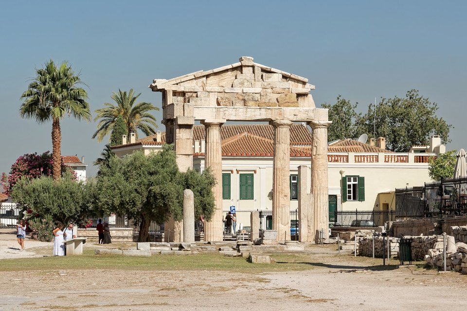

Greece · Athens
Roman Agora audio guide
5 stops · 9 min · offline · plays as you arrive
Test mode — Paystack test checkout, no live charge.
Billed in ZAR
Unlocks in this browser after payment.
A 5-stop offline audio guide to Roman Agora in Athens, recorded in 10 languages and designed to play as you arrive. It covers the Gate of Athena Archegetis, octagonal Tower of the Winds, and Hadrian’s Library. Download once; you will not need a signal on the ground.
Stops
- 1
The Gate of Athena Archegetis
At the gateway of four Doric columns on the west side of the Roman Agora. This is stop 1 on the route.
Free sample: stop 1
Play0:00 / –:–– - 2
The Roman market
Inside the Roman Agora, beside the open courtyard. This is stop 2 on the route.
Script and audio included when you buy - 3
The Tower of the Winds
Beside the eight-sided marble tower at the east end of the Roman Agora. This is stop 3 on the route.
Script and audio included when you buy - 4
The first clock tower
Beside the same tower, by the round annex on its south side. This is stop 4 on the route.
Script and audio included when you buy - 5
Hadrian's Library
This stop is given to Hadrian's Library.
Script and audio included when you buy
On the map
All 5 stop pins for this guide are marked. Open map